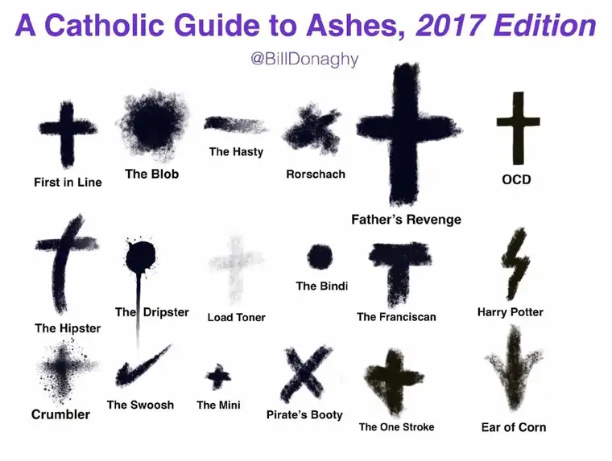

By the time you read this, I’ll be just beginning my Lenten journey and pulling away from the blog-o-sphere until Easter, with the exception of posting my weekly newspaper pieces. But for the most part, it will be off with the desserts and on with the desert, 40 days’ worth of it.
That may sound daunting, and about midway through, it often becomes so. But while some friends complain of and dread Lent, over time, I’ve come to run toward it with open arms. Despite the sacrifice it entails, I find that not only do I anticipate it, but I desire it, deeply. I think it has something to do with the culture of excess all around, and how hard it is to fight that. Lent is a 40-day excuse to let go of all the temptations that call out daily, and put them in their place.
And while Lent is, in some ways, a solitary journey, in other ways, I’ve found it’s not at all.
That breakthrough happened, I think, the year this did.
That’s my friend Ann and me a few Lents ago. We were at Shanley High School, fresh from our yearly smattering of Lenten ash, on Ash Wednesday. That year, Lent took a turn for the better because I realized I didn’t have to do it alone. My friend would be with me, if not every moment of Lent, at least in some of the important moments of it. And it rang true.
And I think it’s something we can all, and should, remember. Life, when done alone, can be quite a burden. And as much as we do have the Lord always accessible, sometimes, we really need “God with skin.” We need the spouse, the friend, the child, the mother, or other; someone to journey with us. When we approach Lent this way, the impossible seems very possible.
I really think there’s something to this. Just Monday, I saw this post on my Facebook feed. It came from Bill Donaghy, who spoke in Fargo a few months ago and shared his thoughts on how to live a more joy-filled life as a Christian. It’s something Pope Francis has talked about, and I’ve tried to embrace, gladly so. Being Catholic is a joy. Being Christian is cause for celebration. Even during Lent. Maybe (gasp) especially during Lent.

Case in point. Last I checked, Bill had collected over 400 shares on this one post. If that doesn’t say “Let’s do Lent together,” I don’t know what does.
I had a blast on Monday sharing this post. Bill had led his with this: “New and Improved! (Just a little)…. Your Catholic Guide to Ashes, 2017 Edition! I’m posting this now because tomorrow all you’ll be doing is eating DONUTS!! But Lent cometh my friends… so prepare ye your foreheads! And your hearts.”
Here was my version (and the visual again for reference): “Which will it be for you? I’m hoping for The Hipster. More likely The Dripster.”
The visual invited a lively discussion.
“Over the years, I’ve had them all,” one friend send. “Even the Ear of Corn?” I asked.
Another said she gets The Blob ever single time. “Big fingers I guess,” she suggested. “Or tiny forehead,” I posed.
“Always hoping for a ‘Load Toner,'” said Tom. Anyone who’s ever run a copy machine knows all about the dreaded ink fade. “Timid much?” I asked, noting his wish to be subtle. “Just kidding of course!”
One friend said she usually gets “that swipe thing.” Another commented on the Nike symbol-like ash: “Dat swoosh tho!”
And then came my priest friend, Fr. James Gross: “Father’s revenge. ha ha!”
Shu said he missed when the priests used to apply “that stamp thing that made it look neat.” Another friend said she’d never heard of such a thing. I commented, “The OCD ash?” To which Shu responded, “It produced that kind of result, yes.”
“I’m usually a load-toner-crumbler combo,” Molly chimed in.
Caroline said she often ends up with the one-stroke or crumbler, but she’s hoping for the Harry Potter this year. “I’m English and wear glasses so it would be super fun!” she added.
Okay, I’ve probably gone on about this too long. There were more comments that came in from texts, to friends and my kids. I enjoyed it all. But I’m also able to see through it all, too. More than anything I see the need for connection. Maybe because we know we will have to face ourselves in the days ahead, we are looking for one another even more right now, like one would a friend before jumping off the diving board.
Now, if you’re thinking, “Isn’t Lent supposed to be a solemn time?” I want to be clear . Yes, Lent is a penitential season, a time to be a bit more contemplative; to give up more and take in less; to live more simply so others may simply live. All that, yes.
But I think this little exercise in “ash talk” simply gives us a way to converse about what we have in common right now — that being this Lenten journey at hand. It might be hard in moments, but depending on what we give it, it has the potential to be beautiful, too.
I welcome Lent because we are so human and can so easily lose our grasp on what’s important. At Mass this past weekend, Fr. Paul challenged us thus: “Maybe this Lent we could choose to decide again to make the Lord God our master.” His words followed the Gospel reading that warned we cannot serve two masters. It’s either one or the other.
That really boils it down to its essence doesn’t it? Lent is about coming back to God and serving him above all else. When we’ve got that ordered right, all else will fall into place.
Or, as Henri Nouwen said, “Lent is a time of returning to God. It is a time to confess how we keep looking for joy, peace and satisfaction in the many people and things surrounding us, without really finding what we desire. Lent is a time of refocusing, of reentering the place of truth, of reclaiming our true identity as beloved sons and daughters of God.”
It is a time of journeying deep and seeking the Lord more purposefully.
But we do not have to journey alone. Yes, there will be moments when we’re confronted with our weakness, and we will feel alone, but we’ll never really be alone. God will be near, and if we need “God with skin,” others, near and far, will still be symbolically wearing their ashes, too, whether “Pirate’s Booty,” “The Hasty” “The Mini” or some other variety, they’ve got their ash smudge to remind them, “You are dust, and to dust you will return.” So let’s get going!
And so off I head into Lent, with many commitments in mind — among them, letting regular updates that would normally appear here go unwritten. It’s always felt right to do this during this season, and I know the quiet will be good all around.
There will be hard moments, and we will fall down. But remember, when the going gets tough, we have one another.
By the way, you have something black on your forehead. 🙂
Q4U: What ash are you hoping for today? And more seriously now, what do you desire most of all this Lent?